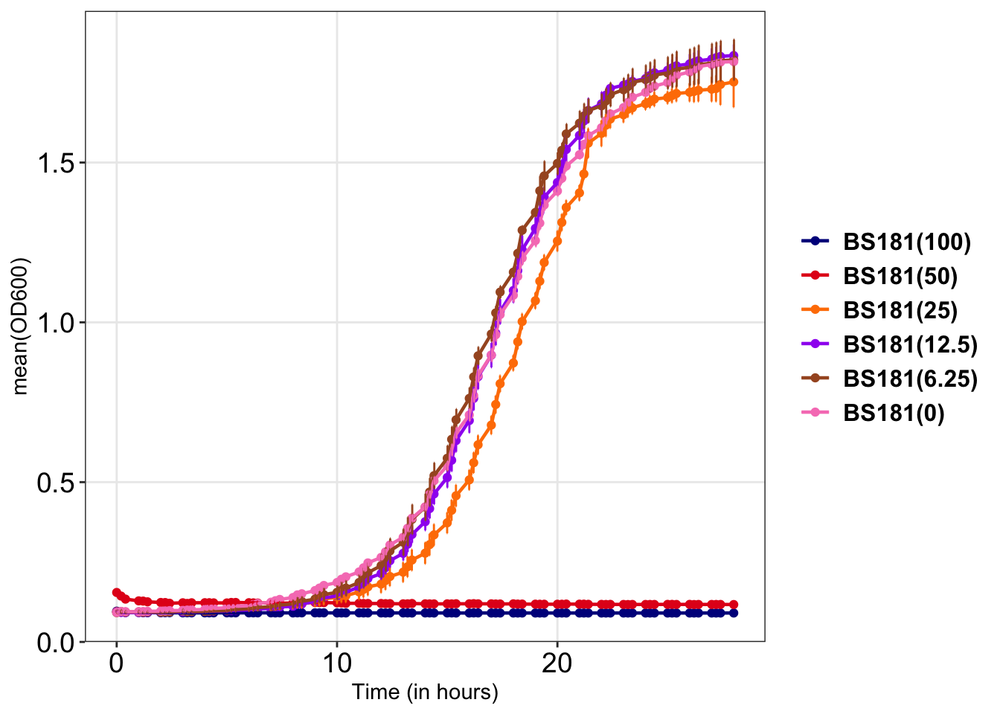

library(magrittr)
dose_curve_data <- readr::read_delim("data_files/dose_response_17Oct24.txt", delim="\t", col_names = TRUE)
dosecurve_dt <- dose_curve_data %>%
dplyr::mutate(Time= stringr::str_replace_all(pattern = ":", replacement = ".", Time), Time=stringi::stri_replace_last_regex(Time, "\\.0[0-9]" , '')) %>% dplyr::mutate(Time=as.double(Time))
current_plot <- dosecurve_dt %>%
dplyr::select(tidyr::matches("^BS181|^Time"))
exclude_patts <- c("^BS181\\(1\\.56\\)", "^BS181\\(3\\.125\\)")
current_plot <- current_plot %>%
dplyr::select(!dplyr::matches(paste(exclude_patts, collapse = "|")))
colr=c( "blue4", "#E41A1C", "#FF7F00","purple","#A65628", "#F781BF")
growkar::plot_growth_curve(dat_growth_curve = current_plot, average_replicates = TRUE, end_timepoint = 28, custom_colors = colr)